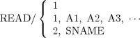

| 11.3. The READ Statement | ||
|---|---|---|
 | Chapter 11. Input/Output Statements in the APT Language |  |
| 11.3. The READ Statement | ||
|---|---|---|
| | Chapter 11. Input/Output Statements in the APT Language | |
The general format for READ statement is:

READ/ 1
Causes all definitions in a PUNCH card block, which is the output from a PUNCH statement in a previously run part program, to be read by the APT processor. The definitions will carry the symbolic names assigned to the individual definitions by the originating part program. The reading of the definitions is terminated by a special card (ENDPCH card, also known as the transfer card) that is punched out by the PUNCH statement in the originating part program. See the next format for placement of the PUNCH card block.
READ/ 1, A1, A2, A3, ...
Causes all definitions in a PUNCH card block to be read by the APT processor. However, the first definition in the PUNCH card block is assigned the label A1 (renamed A1), the second is renamed A2, etc.
If the list of labels is shorter than the number of definitions in the PUNCH card block, the remaining definitions carry the original label assigned to them in the originating part program. If the list of labels is longer than the number of definitions available in the PUNCH card block, a warning diagnostic is printed out, and the surplus labels are undefined.
The PUNCH card block is placed directly after the READ statement in the part program. If the READ statement is in a LOOPST-LOOPND block of statements, the PUNCH card block must appear directly after the LOOPND statement. If the READ statement appears in a macro definition, the PUNCH card block must appear directly after the CALL statement.
![[Note]](images/note.png) | Note |
|---|---|
The APT processor does not permit an unnamed nested definition in a PUNCH statement. |
READ/ 2, SNAME
Causes previously stored part program statements (one of more) to be read into the part program at this logical point within the program.
SNAME is an identifier associated with a particular block of statements at the time they are stored. It may consist of one to six alphanumeric characters, the first of which must be alphabetic.
The APT Operations Manual (H20-0331) contains information as to how such blocks of statements may be stored.
The READ/ 2....feature is called a segment read, as it is used to read in a segment of a part program that has been previously stored.
Restrictions on the segment read are:
A READ/ 2 cannot read in another READ/2 statement.
A READ/ 2 cannot be used to read in the first call to a system macro (see Section 8.3).
READ/ 2 cannot be used in a loop or a macro definition.
It is possible to store the output from a PUNCH statement and bring it in to a subsequent part program by a READ/ 2 statement. To do this, the segment that is read should contain a READ/ 1 statement, followed by the PUNCH card block.
| |  | |
| 11.2. The PUNCH Statement |  | Chapter 12. Special Programs in APT -- CALL |